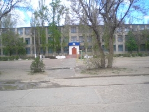

Общие сведения об общеобразовательном учреждении

Муниципальное образовательное
учреждение средняя
общеобразовательная школа № 5
городского округа - город Камышин
Волгоградской области.
Юридический адрес: 403889,
Волгоградская область,
город Камышин,
улица Серафимовича, 67
Фактический адрес: 403889,
Волгоградская область,
город Камышин,
улица Серафимовича, 67
Телефоны: (84457) 4-22-00, 4-34-10 E-mail: skola5kam2006@rambler.ru
МОУ СОШ № 5 "Школа физического совершенствования"
Физкультурно - оздоровительная направленность реализуется через:
- Введение третьего часа физкультуры во 2-11 классах.
- Введение уроков хореографии в начальных классах.
- Систему дополнительного образования на базе клуба "Антей".
Цели, которые ставит перед собой учреждение:
- Обеспечить ежегодное освоение школьниками I, II, III ступени учебных программ по предметам базисного учебного плана на уровне, достаточном для успешного продолжения базового и получения профессионального образования в избранных учебных заведениях
- Обеспечить ежегодно запланированное среднее качество усвоения учащимися школы базовых учебных программ при переходе из одной ступени образования к другой
- Сохранить динамику увеличения призовых мест на городских и зональных олимпиадах
- Обеспечить активное функционирование системы ученического самоуправления в классах и на общешкольном уровне
- Сформировать у выпускников основной школы мотивацию на продолжение образования в соответствии с собственным выбором
- Обеспечить сохранение здоровья школьников за счёт отсутствия учебной перегрузки
- Укрепление здоровья школьников посредством занятий физической культуры и спортом, развитие у школьников устойчивой мотивации к физическому совершенствованию
|